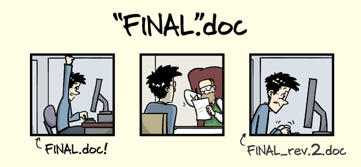

Science as distributed open-source
knowledge development
Digital Total at University of Hamburg


![]()
October 10, 2023
Computational Reproducibility
… when the same analysis steps performed on the same dataset consistently produce the same answer (Turing Way)

{kind=link}
The problem
- about more than half of research is not reproducible 1
- research data, code, software and materials are often not available “upon reasonable [sic] request”
- if resources are shared, they are often incomplete
- 90% agree: “reproducibility crisis” (Baker 2016)
Why?
- computational reproducibility is hard
- researchers lack training
- incentives are not aligned
- “natural selection” of bad science
- we need a professional toolkit
“… accumulated evidence indicates that there is substantial room for improvement with regard to research practices to maximize the efficiency of the research community’s use of the public’s financial investment.” (Munafò et al. 2017)
Castellum: Digital, privacy-compliant participant management system

Faculty of Psychology & Human Movement Science
“We optimize the digital recruitment of study participants. We have access to a broad participant database through which participants can be recruited according to specific criteria.” (see Digital Strategy, 2022)
- free to use, digital, open-source
- GDPR-compliant data protection & security
- developed at the Max Planck Society
- growing international user community
Castellum UHH Task Force
- 10 active members (scientific & IT staff)
- On-going consultations with data protection officer
- Project website (in German) with open-source code
MRI Total: Transparent and reproducible MRI data processing
1. Neuroimaging Data Collection

2. Standardization of human neuroimaging data

3. Automated MRI data quality control & processing
4. Open-source software UHH infrastructure
- High-performance computing (e.g., Hummel)
- Distributed data management (e.g., DataLad)
- Data storage on UHH’s Object Storage and RDR
- Containerized computational environments
Teaching: Reproducible & FAIR open educational resources (OERs)

- Findable / Accessible: Ensure long-term preservation and get a persistent identifier (e.g., DOI) via data repositories, journal articles or OER registries
- Interoperable: Use plain-text formats (e.g., Markdown) or commonly used formats (e.g., PowerPoint)
- Reusable: Add documentation, metadata and share under an open license (e.g., Creative Commons licenses)
Digital Literacy: A course on “Version Control of Code and Data”
Summary: A hands-on seminar about version control of code and data using Git with curated online materials, interactive discussions, quizzes and exercises, targeted at (aspiring) researchers in Psychology & Neuroscience
Why we need version control …

What is version control?
“Version control is a systematic approach to record changes in a set of files, over time. This allows you and your collaborators to track the history, see what changed, and recall specific versions.” (Turing Way)

Science as open source knowledge development 2
How can we do better science?
The long-term challenges are largely non-technical
- open-source, avoiding commercial vendor lock-in
- adopting new practices and upgrading workflows
- moving towards a “culture of reproducibility” 3
- changing incentives and funding schemes
Technical solutions already exist!
- Version control (e.g., Git)
- Integration with flexible infrastructure (e.g., GitLab)
- Systematic contributions & review (e.g., pull / merge requests)
- Reproducible computational environments (e.g., Docker)
- Transparent workflows and procedures (e.g., GNU Make)
- Project communication next to code & data (e.g., Issues)

Thank you! üôè

Dr. Lennart Wittkuhn
lennart.wittkuhn@uni-hamburg.de
https://lennartwittkuhn.com/
GitHub Mastodon Twitter
üíª Slides: Slides are publicly available at https://lennartwittkuhn.com/digital-total
üì¶ Software: Reproducible slides build with Quarto and deployed to GitHub Pages using GitHub Actions (details in the Quarto docs)
Source: Source code is available at https://github.com/lnnrtwttkhn/digital-total
üñ≤Ô∏è DOI: 10.5281/zenodo.8296951 (generated using GitHub + Zenodo, see GitHub docs)
License: Creative Commons Attribution 4.0 International (CC BY 4.0)
üí¨ Contact: I welcome any feedback via email or GitHub issues. Thank you!